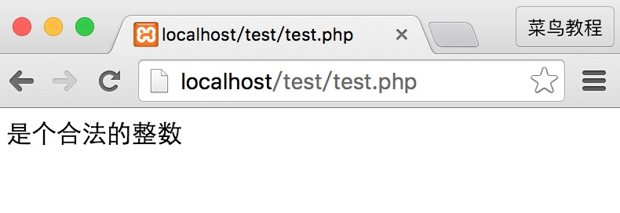
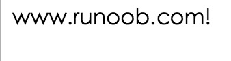

PHP Filters
PHP filters are used to validate and filter data from non-secure sources, such as user input.
What is a PHP Filter?
PHP filters are used to validate and filter data from non-secure sources.
Testing, validating, and filtering user input or custom data is an important part of any web application.
PHP's filter extension is designed to make data filtering easier and faster.
Why Use Filters?
Almost all web applications rely on external input. This data usually comes from users or other applications (such as web services). By using filters, you can ensure that your application receives the correct input type.
You should always filter external data!
Input filtering is one of the most important application security topics.
What is external data?
- Input data from forms
- Cookies
- Web services data
- Server variables
- Database query results
Functions and Filters
To filter a variable, use one of the following filter functions:
- filter_var() - Filters a single variable with a specified filter
- filter_var_array() - Filters multiple variables with the same or different filters
- filter_input - Gets an input variable and filters it
- filter_input_array - Gets multiple input variables and filters them with the same or different filters
In the example below, we used the filter_var() function to validate an integer:
Example
The code above uses the "FILTER_VALIDATE_INT" filter to filter the variable. Since the integer is valid, the code above will output:

If we try to use a non-integer variable (such as "123abc"), it will output: "Integer is not valid".
For a complete list of functions and filters, visit ourPHP Filter Reference Manual。
Validating and Sanitizing
There are two types of filters:
Validating filters:
- Used to validate user input
- Strict format rules (such as URL or E-Mail validation)
- Return the expected type on success, or FALSE on failure
Sanitizing filters:
- Used to allow or deny specified characters in a string
- No data format rules
- Always return a string
Options and Flags
Options and flags are used to add additional filtering options to a specified filter.
Different filters have different options and flags.
In the example below, we used filter_var() with the "min_range" and "max_range" options to validate an integer:
Example
Just like the code above, options must be placed in an associative array named "options". If a flag is used, it does not need to be inside the array.
Since the integer is "300", which is not within the specified range, the output of the code above will be:
Not a valid integer
For a complete list of functions and filters, visit ourPHP Filter Reference ManualYou can see the available options and flags for each filter.
Validate Input
Let's try to validate input from a form.
The first thing we need to do is confirm whether the input data we are looking for exists.
Then we filter the input data using the filter_input() function.
In the example below, the input variable "email" is passed to the PHP page:
Example
The test result of the above example is as follows:

Example Explanation
The example above has an input variable (email) sent via the "GET" method:
- Check whether an "email" input variable of type "GET" exists
- If the input variable exists, check whether it is a valid e-mail address
Sanitize Input
Let's try to sanitize a URL sent from a form.
First, we need to confirm whether the input data we are looking for exists.
Then, we use the filter_input() function to sanitize the input data.
In the example below, the input variable "url" is passed to the PHP page:
<?php
if(!filter_has_var(INPUT_GET, "url"))
{
echo("没有 url 参数");
}
else
{
$url = filter_input(INPUT_GET,
"url", FILTER_SANITIZE_URL);
echo $url;
}
?>
Example Explanation
The example above has an input variable (url) sent via the "GET" method:
- Check whether a "url" input variable of type "GET" exists
- If this input variable exists, sanitize it (remove illegal characters) and store it in the $url variable
If the input variable is a string like this: "http://www.ruåånoøøob.com/", then the sanitized $url variable will look like this:
Filter Multiple Inputs
Forms usually consist of multiple input fields. To avoid making repeated calls to the filter_var or filter_input functions, we can use filter_var_array or the filter_input_array function.
In this example, we use the filter_input_array() function to filter three GET variables. The received GET variables are a name, an age, and an e-mail address:
Example
Example Explanation
The example above has three input variables (name, age, and email) sent via the "GET" method:
- Set up an array that contains the names of the input variables and the filters used for the specified input variables
- Call the filter_input_array() function with the GET input variables and the array just set up as parameters
- Check whether the "age" and "email" variables in the $result variable contain illegal input. (If illegal input exists, the input variables become FALSE after using the filter_input_array() function.)
The second parameter of the filter_input_array() function can be an array or the ID of a single filter.
If the parameter is the ID of a single filter, then that specified filter filters all the values in the input array.
If the parameter is an array, then this array must follow the rules below:
- It must be an associative array, in which the input variables it contains are the keys of the array (e.g., the "age" input variable)
- The values of this array must be filter IDs, or an array that specifies filters, flags, and options.
Using Filter Callback
By using the FILTER_CALLBACK filter, you can call a custom function and use it as a filter. This gives you complete control over data filtering.
You can create your own custom functions, or you can use existing PHP functions.
Specify the function you intend to use as a filter according to the method specified by the options. In the associative array, use the name "options".
In the example below, we use a custom function to convert all "_" to ".":
Example
The result of the above code is shown below:

Example Explanation
The example above converts all "_" to ".":
- Create a function that replaces "_" with "."
- Call the filter_var() function with the FILTER_CALLBACK filter and an array containing our function